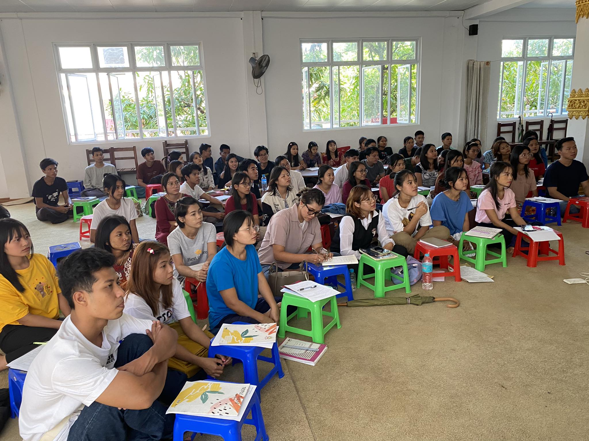
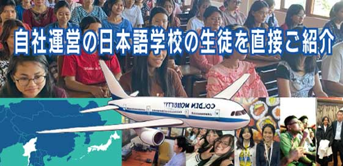
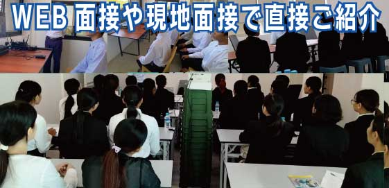

実践的な日本語教育
試験対策だけでなく、日本での生活や就労を想定した日常会話・文化理解まで教育します。
MYANMAR TO JAPAN
自社日本語学校の教育、人材紹介、送り出し、入国後の生活・就労支援まで。仲介を介さない一貫体制で、企業と人材のより良い出会いをつくります。
外国人材の採用について相談する →※ 本ページはサービス紹介の構成案です。掲載内容・写真はお打ち合わせ後に調整します。

ABOUT GMI
GMIはミャンマーと日本の両国に拠点と機能を持ち、海外人材採用の複雑な工程を一つにつなぎます。
ミャンマーで自社運営する日本語学校の生徒を企業へ直接紹介。政府公認の送り出し機関と、日本国内の有料職業紹介・登録支援の体制を連携させ、来日前から就労後まで伴走します。
CHALLENGES
日本語でしっかり
コミュニケーションできる？
採用してもすぐに
退職してしまわない？
海外採用や在留資格の
手続きが分からない
入国後の生活支援まで
社内だけで対応できない
複数の機関との
調整に手間がかかる
GMI SOLUTION
試験対策だけでなく、日本での生活や就労を想定した日常会話・文化理解まで教育します。
学習姿勢や人柄を継続的に見てきた生徒を、企業のニーズに合わせてご紹介します。
ミャンマー政府公認の送り出し機関として、現地の申請・承認・契約を支援します。
入国準備から生活オリエンテーション、各種相談まで日本側の体制で対応します。
ミャンマースタッフが細やかにフォローし、企業と人材の双方の不安を軽減します。
問題が小さいうちに把握し、就労・生活の両面から長期活躍を目指して伴走します。
WHY GMI
01
募集して初めて会う人材ではありません。日々の学習や共同生活を通して、一人ひとりの人柄や姿勢を理解したうえで企業との出会いをつくります。


JM NIPPON JAPANESEDIRECT ROUTE
自社日本語学校
政府公認送り出し機関
有料職業紹介
登録支援・定着支援
窓口を一本化することで、情報の行き違いを減らし、採用前後を通じた透明性の高い支援を目指します。
SERVICE
ミャンマー側と日本側が連携し、相談から就労後までを一貫してサポートします。実際の進行や必要期間は、職種・在留資格・申請状況に応じて個別にご案内します。
採用背景、仕事内容、必要人数、求める日本語レベルや人物像を伺います。
自社校を中心に候補者を選定し、プロフィールや学習状況とともに紹介します。

03WEBまたは現地で面接。条件を相互に確認し、内定後に雇用契約を締結します。
ミャンマー政府への申請と、日本側の在留資格・入国関連手続きを連携して進めます。
入国時の受け入れや生活オリエンテーションを行い、安心して仕事を始められる環境を整えます。
定期的なフォローと母国語での相談対応を通じ、企業と人材の長期的な関係を支えます。
EDUCATION
GMIが運営するJMニッポン日本語学校では、日本語能力試験対策に加え、実際の生活や仕事で必要になる会話力を重視。日本で困らないためのコミュニケーションを学びます。
AFTER ARRIVAL
慣れない言葉や暮らしのなかで、困りごとを抱え込まないように。ミャンマースタッフと日本側担当者が連携し、人材にも企業にも近い支援を行います。
就労後5年間の定着を目指す
支援体制を構築
FLOW
お問い合わせから就労開始までの基本的な流れです。
採用課題をヒアリング
条件・人物像を整理
募集・選定・ご提案
WEB／現地面接
両国で連携して対応
支援を継続
※ 所要期間・手続きは採用区分や個別条件により異なります。詳しくはお問い合わせください。
COMPANY
ミャンマーの若者が安心して日本で働き、企業とともに長く活躍できる環境づくりを目指しています。
FROM MYANMAR
TO JAPAN